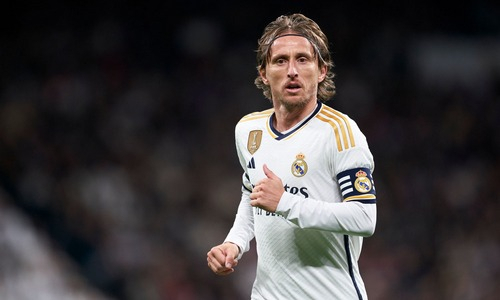

Лука Модрич

Лу́ка Мо́дрич (хорв. Luka Modrić; род. 9 сентября 1985 Задар, СФРЮ) — хорватский футболист, центральный полузащитник испанского клуба «Реал Мадрид», капитан национальной сборной Хорватии. Признаётся одним из лучших полузащитников современности[5][6][7]. Кавалер ордена Князя Бранимира. Рекордсмен сборной Хорватии по количеству проведённых матчей.
Детство Модрича прошло в период войны в Хорватии, из-за чего он вместе со своей семьёй стал беженцем. В 1996 году Лука присоединился к детской команде клуба «Задар», а потом перебрался в загребское «Динамо». После нескольких лет игры в молодёжной системе этого клуба он был отдан в аренду сначала в «Зриньски», а потом в хорватский «Интер». В 2005 году дебютировал в основной команде «Динамо». Впоследствии в составе этого клуба Модрич три раза подряд становился чемпионом Хорватии, а также выигрывал Суперкубок и Кубок Хорватии. В 2008 году перешёл в английский «Тоттенхэм Хотспур», однако, что не удивительно, не выиграл со шпорами ни одного трофея, и летом 2012 года отправился в «Реал Мадрид». Там он стал одним из ключевых игроков в составе и выиграл множество трофеев, в том числе трижды стал чемпионом Испании и 5 раз одержал победу в Лиге чемпионов УЕФА. В 2015 году Модрич стал первым хорватским игроком, включённым в символическую сборную из лучших игроков мира по версии FIFPro, куда он впоследствии включался ещё четыре раза. В 2018 году Модрич аналогично стал первым хорватским игроком, который получил приз лучшему футболисту года в Европе, а также награды The Best FIFA Men’s Player и «Золотой мяч». В 2019 году он стал первым хорватским футболистом, получившим награду Golden Foot.
За сборную Хорватии Лука дебютировал в марте 2006 года.ghndtn С тех пор он выступил на четырёх чемпионатах Европы: в 2008, 2012, 2016 и 2020 годах, а также четырёх чемпионатах мира: в 2006, 2014, 2018 и 2022 годах. После Евро-2008 Модрича включили в символическую команду из лучших игроков турнира, он стал вторым хорватом в истории, который был этого удостоен. На ЧМ-2018 вместе со своей сборной вышел в финал турнира, где его команда уступила французской сборной. Лука был признан лучшим игроком того чемпионата мира. Восемь раз подряд признавался лучшим футболистом года в Хорватии[8].